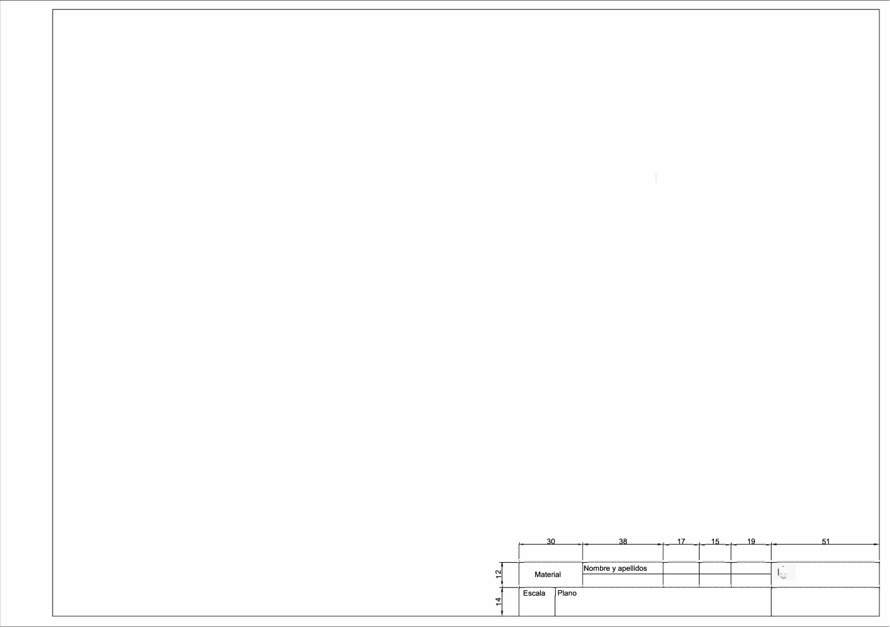

Vistas y acotación
Visualiza el contenido que encontrarás en el siguiente enlace:
Cómo acotar
Escalas
En el siguiente vídeo del canal de Mediatrizeo puedes ver como se utilizan las escalas.
Actividad creación de planos
En un formato DIN A3 Debes realizar las vistas de la construcción arquitectónica seleccionada: Planta y alzado (perfil si fuera necesario). Aplica la escala correspondiente para el formato y acótalo según la norma UNE. Recuerda que tiene que llevar el cuadro de rotulación, como se muestra en la imagen.
